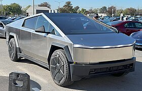

ისტორია თუ რაფერ შეიქმნა აი ჯართი
მოკლედ რა ერთ დღეს ნიკოლას ტესლას მოუვიდა იდეა რომ რაღაცა გაეკეთებინა და მან მოიფიქრა რო ეჭამა მერე დაწვა და დაიძინა ლოგინში რომ გაიღვიძა დახდვდა რომ მის ლოგინში არ იყო და ამ დროს მან გადაიხედა გარეთ და დაინახა რომ იყო დიდ შუქურაზე სადღაც შოოორს ზღვაში სადაც არც ნავი და არც კატერი არ მიდიოდა ხოდა მან გამოიგონა მექანიზმი რომელიც მხოლოდ ელექტროობის დახმარებით მუშაობდა მაგრამ მან წყლით ამუშავა ის ნამდვილი გენია ყოფილა და ადამიანებმა არ იცოდა ესს ღადაობბბ ???????
Subsidiaries and alliances
ეს არ გვინდა
Cyber Truck
The Tesla Cybertruck is a battery electric medium duty full-size pickup truck built by Tesla, Inc. since 2023.[7] Introduced as a concept vehicle in November 2019, it has a body design reminiscent of low-polygon modelling, consisting of flat stainless steel sheet panels.